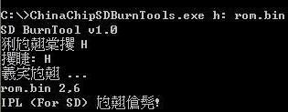

目前國外網站已經有高手發佈，如何讓GA330掌機透過MiniSD開機並輸出訊息的程式，雖然這位高手得到原廠的支援並取得一份精簡版的資料手冊，但是，被廠商限定，不准公開相關的資料手冊、程式碼內容，相當遺憾原廠的做法。不過司徒還是要介紹一下這位高手的燒錄步驟，之後我們再來研究這個韌體程式的逆向工程
操作步驟：
1. 下載https://github.com/steward-fu/website/releases/download/ga330/sdcard.zip並解壓縮
2. 使用2G MiniSD並格式化成FAT檔案系統(不能是FAT32檔案系統)
3. 開啟命令列視窗並切換到解壓縮的資料夾
4. 輸入：ChinaChipSDBurnTools.exe x: rom.bin指令(x:就是MiniSD的磁碟位置)
燒錄成功後就可以看到如下畫面

接著將MiniSD插入GA330掌機並按下DPad的下按鈕，然後開啟電源鍵，接著就可以看到UART的訊息(Baudrate 115200bps)
usb boot!